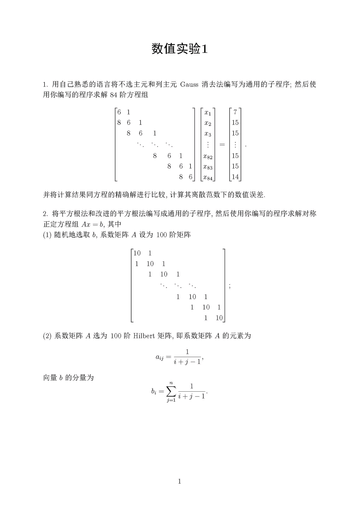
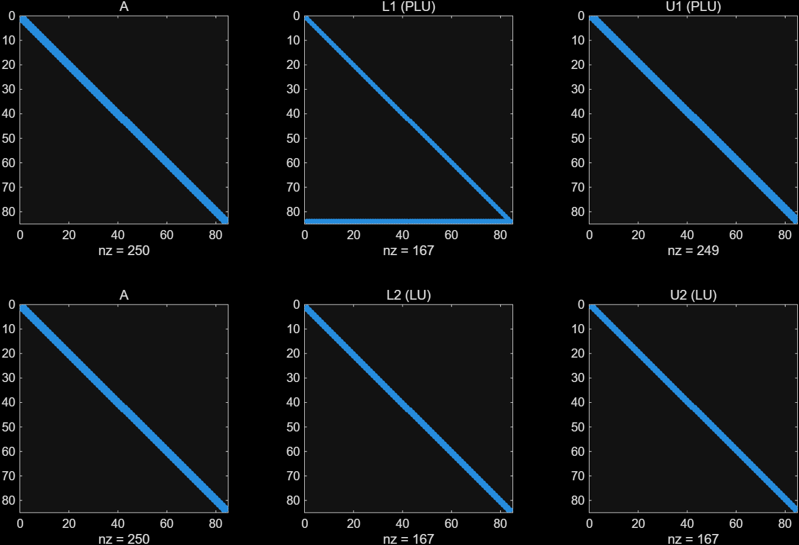

河海大学 数学院
《数值代数》课程
二〇二六年 十一月
实验题目如下：

基本操作实现函数代码如下（MATLAB）：
clear; clc;
n = 84;
A = 6*eye(n) + 8*diag(ones(n-1,1),-1) + diag(ones(n-1,1),1);
b = [7; 15*ones(n-2,1); 14];
x_ref = A\b;
[A_new, p] = PLU(A);
U1 = triu(A_new);
L1 = A_new - U1 + eye(n);
fprintf('PLU: relerr = %.2e\n', norm(A(p,:) - L1*U1)/norm(A));
y = forward_sub(L1, b(p));
x1 = back_sub(U1, y);
fprintf('PLU: ||Ax-b||/||b|| = %.2e ||x-x_ref||/||x_ref|| = %.2e\n', ...
norm(A*x1-b)/norm(b), norm(x1-x_ref)/norm(x_ref));
A_new = LU(A);
U2 = triu(A_new);
L2 = A_new - U2 + eye(n);
fprintf('LU : relerr = %.2e\n', norm(A - L2*U2)/norm(A));
y = forward_sub(L2, b);
x2 = back_sub(U2, y);
fprintf('LU : ||Ax-b||/||b|| = %.2e ||x-x_ref||/||x_ref|| = %.2e\n', ...
norm(A*x2-b)/norm(b), norm(x2-x_ref)/norm(x_ref));
fprintf('||x1-x2||/||x_ref|| = %.2e cond(A) = %.2e\n', ...
norm(x1-x2)/norm(x_ref), cond(A));
figure;
subplot(2,3,1), spy(A), title('A');
subplot(2,3,2), spy(L1), title('L1 (PLU)');
subplot(2,3,3), spy(U1), title('U1 (PLU)');
subplot(2,3,4), spy(A), title('A');
subplot(2,3,5), spy(L2), title('L2 (LU)');
subplot(2,3,6), spy(U2), title('U2 (LU)');
function [A, p] = PLU(A)
n = size(A,1);
p = 1:n;
for k = 1:n-1
[a_max, l] = max(abs(A(k:n,k)));
if a_max == 0
fprintf('Error: 第 %d 步的列主元为0!\n', k);
return;
end
l = l + k - 1;
if l ~= k
t = A(k,:); A(k,:) = A(l,:); A(l,:) = t;
tmp = p(k); p(k) = p(l); p(l) = tmp;
end
A(k+1:n,k) = A(k+1:n,k) / A(k,k);
A(k+1:n,k+1:n) = A(k+1:n,k+1:n) - A(k+1:n,k)*A(k,k+1:n);
end
end
function A = LU(A)
n = size(A,1);
for k = 1:n-1
A(k+1:n,k) = A(k+1:n,k) / A(k,k);
A(k+1:n,k+1:n) = A(k+1:n,k+1:n) - A(k+1:n,k)*A(k,k+1:n);
end
end
function y = forward_sub(L, b)
n = numel(b); y = zeros(n,1);
for i = 1:n
y(i) = (b(i) - L(i,1:i-1)*y(1:i-1)) / L(i,i);
end
end
function x = back_sub(U, b)
n = numel(b); x = zeros(n,1);
for i = n:-1:1
x(i) = (b(i) - U(i,i+1:n)*x(i+1:n)) / U(i,i);
end
end程序运行输出的结果如下：
| 算法 | 数据 | 数值 |
|---|---|---|
| PLU | relerr | 2.65e-32 |
| PLU | ||Ax-b||/||b|| | 3.52e-09 |
| PLU | ||x-x_ref||/||x_ref|| | 3.17e+08 |
| LU | relerr | 0.00e+00 |
| LU | ||Ax-b||/||b|| | 4.90e-10 |
| LU | ||x-x_ref||/||x_ref|| | 7.92e+07 |
| PLU VS LU | ||x1-x2||/||x_ref|| | 3.96e+08 |
| PLU VS LU | cond(A) | 1.18e+17 |
实验结果可视化：
